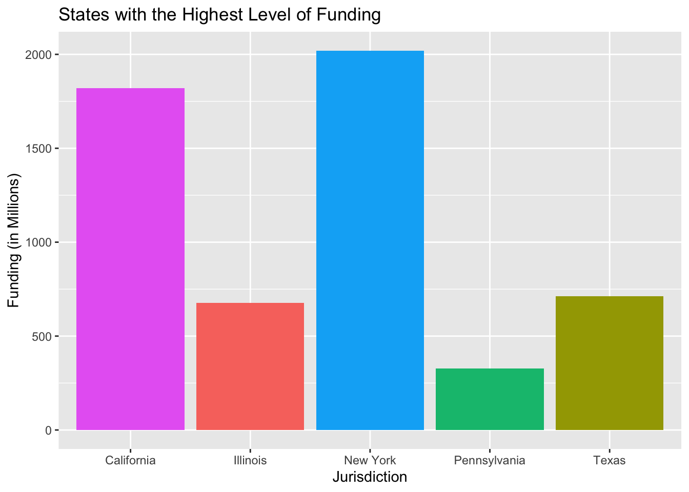

The data I chose for this exercise is data from the CDC that contains the funds the CDC received from the federal government in a form of five different congressional acts: the Corona virus Preparedness and Response Supplemental Appropriations Act, 2020; Corona virus Aid, Relief, and Economic Security Act; Paycheck Protection Program and Health Care Enhancement Act; Corona virus Response and Relief Supplemental Appropriations Act, 2021; and American Rescue Plan Act of 2021.
Load packages
library(readr) #for loading csv fileslibrary(dplyr) #for data processing/cleaning
Attaching package: 'dplyr'
The following objects are masked from 'package:stats':
filter, lag
The following objects are masked from 'package:base':
intersect, setdiff, setequal, union
library(tidyr) #for data processing/cleaninglibrary(stats) #used for cleaning library(here) #to set paths
here() starts at /Users/jacobmatta/Documents/R/jacobmatta-MADA-portfolio
Load data
Note the use of the here() package and not absolute paths
Notice here::here is to indicate package::function()
Rows: 2265 Columns: 6
── Column specification ────────────────────────────────────────────────────────
Delimiter: ","
chr (5): Jurisdiction, Sub-Jurisdiction, Topical Area, Supplemental Act Name...
dbl (1): Amount
ℹ Use `spec()` to retrieve the full column specification for this data.
ℹ Specify the column types or set `show_col_types = FALSE` to quiet this message.
Explore the Data
dplyr::glimpse(rawdata)
Rows: 2,265
Columns: 6
$ Jurisdiction <chr> "California", "District of Columbia", "Georgia…
$ `Sub-Jurisdiction` <chr> "Los Angeles County", NA, NA, NA, NA, NA, NA, …
$ `Topical Area` <chr> "Epi and Lab Capacity", "Vaccine Preparedness"…
$ `Supplemental Act Name` <chr> "Paycheck Protection Program and Health Care E…
$ `Award Name` <chr> "ELC Epi & Lab Capacity for HHS", "COVID-19 Va…
$ Amount <dbl> 288995531, 518135, 14786285, 2346310, 27696750…
summary(rawdata)
Jurisdiction Sub-Jurisdiction Topical Area Supplemental Act Name
Length:2265 Length:2265 Length:2265 Length:2265
Class :character Class :character Class :character Class :character
Mode :character Mode :character Mode :character Mode :character
Award Name Amount
Length:2265 Min. :0.000e+00
Class :character 1st Qu.:5.600e+05
Mode :character Median :2.865e+06
Mean :2.626e+07
3rd Qu.:1.291e+07
Max. :1.696e+09
head(rawdata)
# A tibble: 6 × 6
Jurisdiction `Sub-Jurisdiction` `Topical Area` Suppl…¹ Award…² Amount
<chr> <chr> <chr> <chr> <chr> <dbl>
1 California Los Angeles County Epi and Lab Ca… Payche… ELC Ep… 2.89e8
2 District of Columbia <NA> Vaccine Prepar… Americ… COVID-… 5.18e5
3 Georgia <NA> Emergency Resp… Corona… Crisis… 1.48e7
4 Marshall Islands <NA> School Testing Americ… ELC Ep… 2.35e6
5 Michigan <NA> Public Health … Americ… DIS Wo… 2.77e7
6 Ohio <NA> Emergency Resp… Corona… Crisis… 0
# … with abbreviated variable names ¹`Supplemental Act Name`, ²`Award Name`
skimr::skim(rawdata)
Data summary
Name
rawdata
Number of rows
2265
Number of columns
6
_______________________
Column type frequency:
character
5
numeric
1
________________________
Group variables
None
Variable type: character
skim_variable
n_missing
complete_rate
min
max
empty
n_unique
whitespace
Jurisdiction
0
1.00
4
20
0
63
0
Sub-Jurisdiction
1947
0.14
5
49
0
85
0
Topical Area
0
1.00
9
32
0
10
0
Supplemental Act Name
0
1.00
32
75
0
7
0
Award Name
0
1.00
13
177
0
31
0
Variable type: numeric
skim_variable
n_missing
complete_rate
mean
sd
p0
p25
p50
p75
p100
hist
Amount
0
1
26261038
92299879
0
560000
2865130
12914171
1696424899
▇▁▁▁▁
Clean Data
the only variable that appears to have a lot of missing values is Sub-jurisdiction.
I am going to extract the observations that have missing sub-jurisdictions.
df1 <- stats::na.omit(rawdata)
Clean Data Further
There are some funding amounts that are $0.
I am only interested in funding that is over $0.
To clean this up I will remove all the rows containing $0.
df2 <- df1 %>% dplyr::filter(Amount !=0)
Clean Data3 Even Further
I am only interested in the supplemental act name. The following code will remove the topical area column and the award name column.
First, we summarize the data based on location (Jurisdiction).
Also, we wish to convert the “Amount” column to one that can be easily readable by viewers.
We can achieve this by using the group-by(), summarise(), and mutate() functions.
test1 <- df3 %>%group_by(Jurisdiction) %>%summarise(Funding =sum(Amount)) %>%mutate(`Funding (in Millions)`= Funding/1000000)
Plotting
We want to show the relationships between the state and the amount of funding received. Since there is such a disparity between the states with the most funding and the states with the least funding, I will only show the states with the highest level of funding.
ggplot(mapping=aes(x=Jurisdiction,y=`Funding (in Millions)`)) +geom_col(data=slice_max(test1,order_by=`Funding (in Millions)`,n=5),aes(fill=c("red","yellow","green","blue","purple"))) +ylim(0,max(test1$`Funding (in Millions)`)) +theme(legend.position="none") +labs(title="States with the Highest Level of Funding")

Selecting data
As before, we summarise the data, but this time, we group by “Supplemental Act Name”.